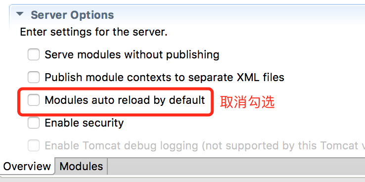

部署
tomcat
1. 关闭 eclipse server Auto Reload 特性
禁用默认值 
单独禁用项
- 建议关闭 jar 扫描, 提高启动速度, 减少内存占用 , 修改
catalina.properties
tomcat.util.scan.StandardJarScanFilter.jarsToSkip=*.jar
2. 内存设置
Linux 修改
catalina.sh,开始处添加JAVA_OPTS='-Xms512m -Xmx2048m'Windows 修改
catalina.batset JAVA_OPTS=-Xms512m -Xmx2048m
3. 启用远程 JMX 连接
修改 catalina.sh , 搜索 [ "$1" = "start" ] , 在下方添加
JAVA_OPTS="-Dcom.sun.management.jmxremote \
-Dcom.sun.management.jmxremote.port=1099 \
-Djava.rmi.server.hostname=192.168.1.111 \
-Dcom.sun.management.jmxremote.ssl=false \
-Dcom.sun.management.jmxremote.authenticate=false $JAVA_OPTS"
linux 系统可以用
`hostname -i`获取 ip
Weblogic
感谢融资租赁事业部的技术小伙伴协助!
weblogic 上的部署有些特殊，主要注意以下几点：
以下设置仅仅针对 weblogic 12 版本，其他版本可能存在通配符等问题
1. JNDI 数据源
weblogic 上定义好数据源后，在 config.properties 中需要修改 jndi 的名字
db.jndiName=hap_dev
tomcat 中是 java:comp/env/jdbc/hap_dev，这点不一样
2. jar 冲突问题
weblogic 上的一些 jar 和框架中的存在冲突，需要排除掉。
修改项目中的 pom.xml，留意注释下的配置
<dependency>
<groupId>com.hand</groupId>
<artifactId>hap</artifactId>
<type>war</type>
<version>${hap.version}</version>
<!--排除 jar -->
<exclusions>
<exclusion>
<groupId>com.google.guava</groupId>
<artifactId>guava</artifactId>
</exclusion>
</exclusions>
</dependency>
<dependency>
<groupId>com.hand</groupId>
<artifactId>hap</artifactId>
<version>${hap.version}</version>
<classifier>classes</classifier>
<scope>provided</scope>
<!--排除 jar -->
<exclusions>
<exclusion>
<groupId>com.google.guava</groupId>
<artifactId>guava</artifactId>
</exclusion>
</exclusions>
</dependency>
<dependency>
<groupId>com.hand</groupId>
<artifactId>hap-db</artifactId>
<version>${hap.version}</version>
<!--排除 jar -->
<exclusions>
<exclusion>
<groupId>com.google.guava</groupId>
<artifactId>guava</artifactId>
</exclusion>
</exclusions>
</dependency>
...
<plugin>
<groupId>org.apache.maven.plugins</groupId>
<artifactId>maven-war-plugin</artifactId>
<version>2.6</version>
<configuration>
<attachClasses>true</attachClasses>
<overlays>
<overlay>
<groupId>com.hand</groupId>
<artifactId>hap</artifactId>
<!--排除 jar -->
<excludes>
<exclude>WEB-INF/lib/guava-15.0.jar</exclude>
<exclude>WEB-INF/lib/stax-api-1.0.1.jar</exclude>
<exclude>WEB-INF/lib/xercesImpl-2.10.0.jar</exclude>
<exclude>WEB-INF/lib/xml-apis-1.3.04.jar</exclude>
<exclude>WEB-INF/lib/xml-apis-ext-1.3.04.jar</exclude>
</excludes>
</overlay>
</overlays>
</configuration>
</plugin>
打包后确保 lib 目录不存在上述 6 个 jar。
3. 新增 weblogic.xml
在 WEB-INF 目录下新增 weblogic.xml
<?xml version="1.0" encoding="UTF-8"?>
<weblogic-web-app>
<container-descriptor>
<prefer-application-packages>
<package-name>org.springframework.*</package-name>
<package-name>org.hibernate.*</package-name>
<package-name>javax.validation.*</package-name>
<package-name>javax.validation.spi.*</package-name>
<package-name>org.slf4j.*</package-name>
</prefer-application-packages>
<show-archived-real-path-enabled>true</show-archived-real-path-enabled>
</container-descriptor>
</weblogic-web-app>
上述 3 点在部署的时候请留意。